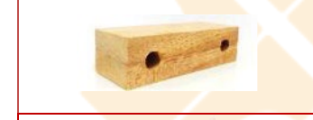
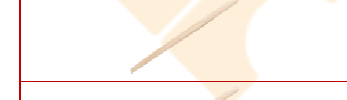
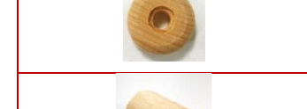
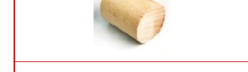
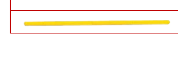
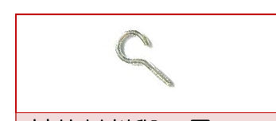

蹦蹦車教案
編號 03-P3-02 ・ 難度：高級
本教案以「蹦蹦車」火車玩具為主題，結合平衡與滾動原理，透過鑽孔、鋸切與扣合等進階木工技巧，讓孩子打造能相互連結、越組越長的蹦蹦車隊。

適合年級
5 歲以上（親子）
教學時間
60 分鐘
難度
高級
教學領域
S 科學・T 技術・E 工程・A 藝術・M 數學
教案類型
STEAM 親子創客教案
課程內容
平衡與滾動原理介紹（S）・ 砂磨、鑽孔、膠合、鋸切技巧（T）・ 組裝、扣合、釘鎚技巧（E）・ 塑型彩繪（A）・ 點數與刻度（M）
課程流程
車身鑽孔與車廂組裝 ・ 木釘與輪軸安裝 ・ 羊眼釘連結裝置製作 ・ 彩繪美化 ・ 貨物運輸測試 ・ 車廂串接成最長列車大賽
課程材料
車身木塊 ×2 片（桃花心木） ・ 直徑 0.5 公分木棒 ×4 支 ・ 直徑 0.7 公分木棒 ×2 支 ・ 小木輪 ×8 個（桃花心木） ・ 圓木零件 ×2 個 ・ 木釘子 ×1 個 ・ 毛根 ×2 支 ・ 羊眼釘 ×2 個
其他材料與工具：砂紙、白膠或保麗龍膠、剪刀、鉛筆、橡皮擦、色筆、鑽孔機或手搖鑽、0.5／0.6 公分鑽頭、手工線鋸、膠槌或木槌、錐子
延伸學習
貨物運輸與物流概念認識 ・ 車廂連結結構觀察 ・ 團隊合作組成最長列車的協作精神
學習向度與目標
完整教學步驟
材料清單

車身木塊
2 片
國產木材：桃花心木

直徑 0.5 公分木棒
4 支
直徑 0.7 公分木棒
2 支

小木輪
8 個
國產木材：桃花心木

圓木零件
2 個
木釘子
1 個

毛根
2 支

羊眼釘
2 個
其他材料與工具：砂紙、白膠或保麗龍膠、剪刀、鉛筆、橡皮擦、色筆、鑽孔機或手搖鑽、0.5 公分鑽頭、0.6 公分鑽頭、手工線鋸、膠槌或木槌、錐子
情境引導
蹦蹦～蹦蹦～，是什麼東西發出蹦蹦～蹦蹦～的聲音？蹦蹦火車的車長每天都忙碌地在森林以及城市中穿梭，車上總是載著不同的東西。如果你是車長，你會載什麼呢？這些貨物是要帶給誰呢？小心不要開太快，要平安的將貨物載到目的地唷！
活動一：製作蹦蹦車
- 砂磨 2 片車身、木棒、小木輪、圓木零件粗糙與銳利的邊緣，也製作砂磨棒，砂磨有圓洞的地方。
- 將其中 1 片車身靠近四個角的位置，鑽 4 個 5 公厘的洞。
- 將 4 根直徑 0.5 公分的木棒黏進第一節車廂車身的四個洞，作為車廂。
- 在其中一個圓木零件的上方鑽一個直徑 0.6 公分、深度不超過 1.5 公分的孔，並把木釘子敲進孔中。
- 用錐子與槌子在 2 個車身的下方中間處敲一個小孔，並將羊眼釘以順時鐘的方向鎖進去。
- 依照想要的蹦蹦車頭形狀，鋸切或砂磨圓木零件，並黏在車頭車身上。
- 將直徑 0.7 公分的木棒裁切成 4 支，每支長約 6.5 公分。
- 將 4 支直徑 0.7 公分的木棒插入車頭、車廂側邊的洞，再插入 8 個小木輪後，用毛根固定。
- 將羊眼釘相扣，完成蹦蹦車。
活動二：美化
- 用色筆與剩下的材料彩繪、裝飾你的蹦蹦車吧！
活動三：嘟～嘟～開車囉！
- 找一些可運輸的素材，放在第一節車廂，試試看，可以順利的運輸到目的地嗎？
活動四：世上最長的火車
- 怎麼讓大家的蹦蹦車變成一台最長的火車呢？試著調整現有的羊眼釘，組裝每個人的蹦蹦車，組成一台最長的蹦蹦車吧！
注意事項
- 步驟二在鑽孔的時候，注意鑽的位置，不要鑽到車身側邊的圓洞！
- 若使用線鋸，要戴好護目鏡、手套等護具，並聽從大人的指導，千萬不可自行操作，以免發生危險。
- 在塑型的時候，可以使用砂紙包覆木棒或小木塊，製作成塑型工具。砂磨時要注意避免手不小心被磨到。